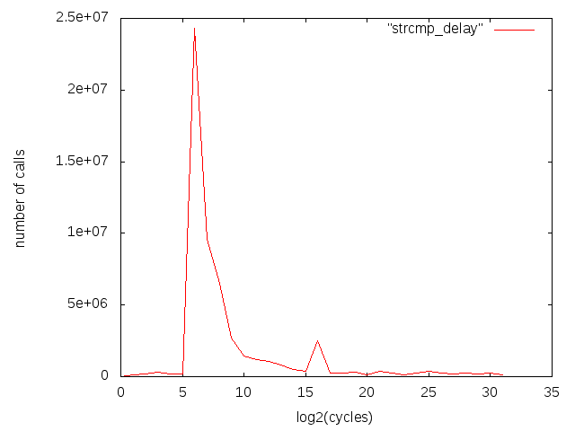
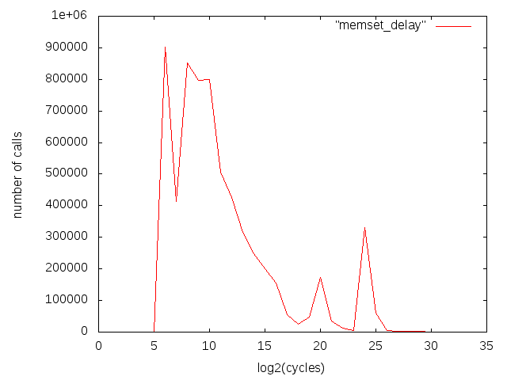

Alignment and sizes
We measure frequencies of string functions that inspect given number of characters. As most of the times string functions use aligned loads in 16 byte blocks we would need to infer from size and alignment distributions. This is less natural than to directly measure number of blocks that we use.
Delays between calls
This property can tell us several characteristics. We use as example delays between strcmp calls:

Figure tells us that most calls happen with delays between 2**5=32 and 2**7=128. We can conclude that strcmp is mostly used in tigth loop or similar construct. Actual delay is smaller as benchmarking causes some overhead.
Sometimes we can see that there are several different use cases that give rise to peeks as in memset.

Next topic is that we can indirectly infer how much could performance depend on instruction cache. If majority of calls happen at most 2**10 cycles from each other then we can conclude that it will reside in instruction cache most of the time.